Rendez le dessin courant identique à l'objectif en faisant des remplacements.
Vous pouvez remplacer une forme par une autre en choisissant ces deux formes parmi les boutons gris.
Si vous êtes coincé, vous pouvez annuler des étapes.
Choisissez deux formes ci-dessous :
Voici les remplacements à effectuer :
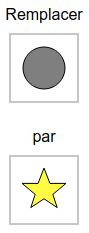 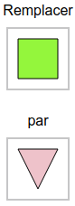 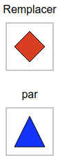Ces remplacements transforment le dessin étape par étape de la manière suivante :
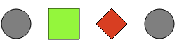Commençons par remplacer le carré par le triangle inversé, puis le rond par le carré :
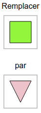 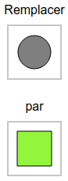Ces remplacements transforment le dessin étape par étape de la manière suivante :
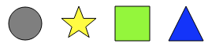À ce stade, il reste à remplacer l'étoile par le triangle, et le triangle par l'étoile, comme illustré ci-dessous :
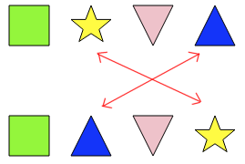Pour échanger ces deux formes, on est obligé de faire intervenir une troisième forme, par exemple un losange. On effectue 3 remplacements :
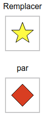 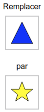 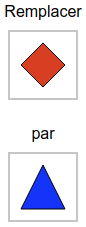Ces remplacements transforment le dessin étape par étape jusqu'au résultat souhaité :
Regardons les remplacements à effectuer en partant de l'étoile jaune. Il faut remplacer l'étoile par un carré vert. Il faut remplacer le carré vert par un losange rouge. Et il faut remplacer le losange rouge par l'étoile jaune.
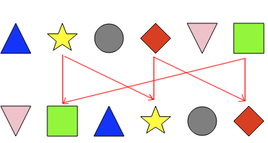Pour effectuer ces remplacements, il est nécessaire de faire intervenir une forme supplémentaire, qui n'apparaît par dans le dessin initial : la croix. On effectue les remplacements suivants :
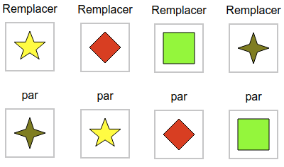On obtient alors le résultat intermédiaire montré ci-dessous :
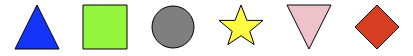Comparons maintenant ce dessin à l'objectif souhaité, qui est :
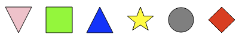Pour atteindre cet objectif, il faut remplacer le triangle bleu par le triangle inversé rose, remplacer le triangle inversé par le rond, et remplacer le rond par le triangle bleu.
Ici encore, il faut faire intervenir une autre forme pour effectuer les remplacements. On peut utiliser la croix, et effectuer les remplacements suivants :
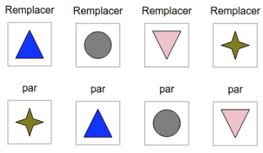